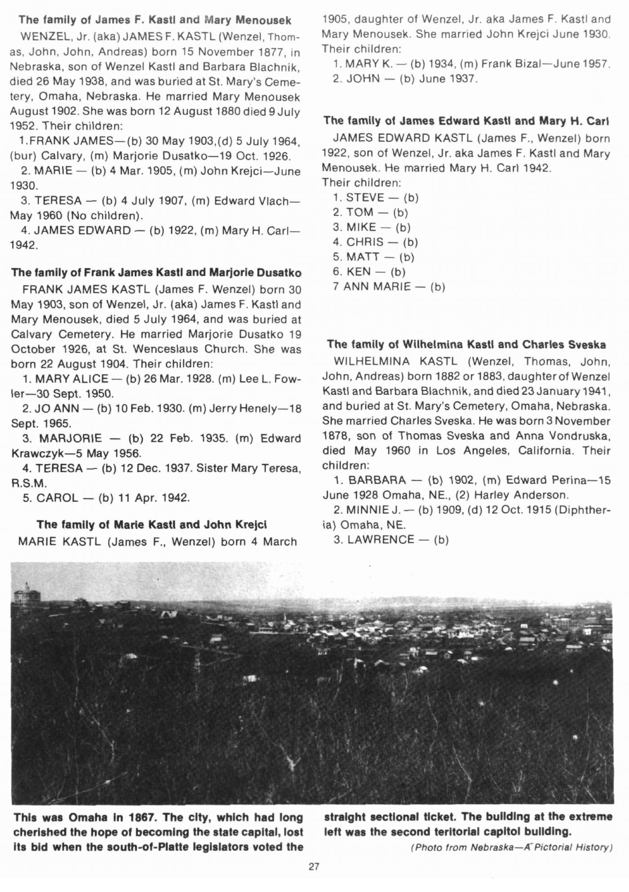

The book · The Family of Wenzel Kastl
Page 27 The family of James F. Kastl and Mary Menousek


Transcription
The family of James F. Kastl and Mary Menousek
WENZEL, Jr. (aka) JAMES F. KASTL (Wenzel, Thomas, John, John, Andreas) born 15 November 1877, in Nebraska, son of Wenzel Kastl and Barbara Blachnik, died 26 May 1938, and was buried at St. Mary's Cemetery, Omaha, Nebraska. He married Mary Menousek August 1902. She was born 12 August 1880 died 9 July 1952. Their children:
- FRANK JAMES—(b) 30 May 1903,(d) 5 July 1964, (bur) Calvary, (m) Marjorie Dusatko—19 Oct. 1926.
- MARIE — (b) 4 Mar. 1905, (m) John Krejci—June 1930.
- TERESA — (b) 4 July 1907, (m) Edward Vlach—May 1960 (No children).
- JAMES EDWARD — (b) 1922, (m) Mary H. Carl—1942.
The family of Frank James Kastl and Marjorie Dusatko
FRANK JAMES KASTL (James F. Wenzel) born 30 May 1903, son of Wenzel, Jr. (aka) James F. Kastl and Mary Menousek, died 5 July 1964, and was buried at Calvary Cemetery. He married Marjorie Dusatko 19 October 1926, at St. Wenceslaus Church. She was born 22 August 1904. Their children:
- MARY ALICE — (b) 26 Mar. 1928. (m) Lee L. Fowler—30 Sept. 1950.
- JO ANN — (b) 10 Feb. 1930. (m) Jerry Henely—18 Sept. 1965.
- MARJORIE — (b) 22 Feb. 1935. (m) Edward Krawczyk—5 May 1956.
- TERESA — (b) 12 Dec. 1937. Sister Mary Teresa, R.S.M.
- CAROL — (b) 11 Apr. 1942.
The family of Marie Kastl and John Krejci
MARIE KASTL (James F., Wenzel) born 4 March 1905, daughter of Wenzel, Jr. aka James F. Kastl and Mary Menousek. She married John Krejci June 1930. Their children:
- MARY K. — (b) 1934, (m) Frank Bizal—June 1957.
- JOHN — (b) June 1937.
The family of James Edward Kastl and Mary H. Carl
JAMES EDWARD KASTL (James F., Wenzel) born 1922, son of Wenzel, Jr. aka James F. Kastl and Mary Menousek. He married Mary H. Carl 1942. Their children:
- STEVE — (b)
- TOM — (b)
- MIKE — (b)
- CHRIS — (b)
- MATT — (b)
- KEN — (b)
- ANN MARIE — (b)
The family of Wilhelmina Kastl and Charles Sveska
WILHELMINA KASTL (Wenzel, Thomas, John, John, Andreas) born 1882 or 1883, daughter of Wenzel Kastl and Barbara Blachnik, and died 23 January 1941, and buried at St. Mary's Cemetery, Omaha, Nebraska. She married Charles Sveska. He was born 3 November 1878, son of Thomas Sveska and Anna Vondruska, died May 1960 in Los Angeles, California. Their children:
- BARBARA — (b) 1902, (m) Edward Perina—15 June 1928 Omaha, NE., (2) Harley Anderson.
- MINNIE J. — (b) 1909, (d) 12 Oct. 1915 (Diphtheria) Omaha, NE.
- LAWRENCE — (b)

Transcriber’s notes
The Marie Kastl/John Krejci entry starts at the bottom of the left column ('born 4 March') and continues at the top of the right column ('1905, daughter of...'). Wide photo with a two-column caption spans the bottom of the page. Print spellings preserved: 'teritorial' in caption; 'James F. Wenzel' without comma in the Frank James Kastl entry; '7 ANN MARIE' without period after the number. In the caption source note there is a stray mark over the 'A' of 'A Pictorial History'.